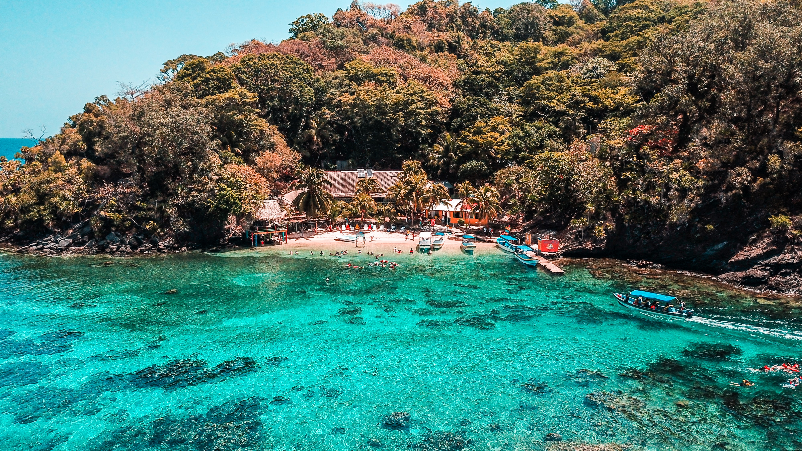

Activities to do
Honduras is not a place for those who like to stay in bed. The country boasts an incomparable culture in every corner. From the indigenous tribe scattered in the North, to the agricultural powerhouse of the South, the country is full of natural beauties and adventures for those adrenaline-seekers. Additionally, the rich history of the country invites anyone who looks to explore history all the way from ancient Mayan civilizations to the Spanish colonial period at around the time Christopher Columbus arrived to Honduran shores during his fourth voyage.
Water Activities
During your visit, you can check off getting your yearly dose of sun and water. Both coasts boast an array of water activities such as full aquatic sports in the Bay Islands, whitewater rafting at Rio Cangrejal, hiking to Puhlapanzak Waterfall, and mangrove forest explorations in any of the country's UNESCO natural herritage forests.
Land Activities
It is only deep within the country that one can fully explore what Honduras has to offer as a cultural site. The entire western border with El Salvador and Guatemala is scattered with many renowned Mayan archeological sites as well as hundreds more burried across history. Near the center of the country, approximately midway between San Pedro Sula and Tegucigalpa lies the Taulabe Cave System. These mysterious caves are home to crystalized human skulls which are believed to have been left since 1000 years BC. The skulls crystalized with mineral-rich water found in the caves, giving them a unique and persistent glow which has inspired tales in popular movies such as the Indiana Jones series.
City Activities
You don't really need to leave the city to go for an adventure. Some of the most valuable cultural pieces lie within urban centers. Such examples include the continent's oldest clock in Comayagua, the historic Manuel Bonilla Theatre in Tegucigalpa, as well as the historic colonial city centers of San Pedro, Tegucigalpa, and Omoa.